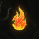

Cheatsheet.Monster
Last Epoch Cheatsheet of Cheatsheets
by Thundersphinx | IGN: C8die | Reddit /u/emeria | Twitch | Patreon
| |
Back Home | Cheatsheets| 1.0 Links | Misc. Links | Previous Cycles
Cheatsheets
Click an Image to Focus (enlarge for some)Leveling | Monolith Items | Blessings | Dungeons | Exiled Mages | Factions
Leveling
By Chapter : [1] | [2] | [3] | [4] | [5] | [6] | [7] | [8] | [9]Step Tables: [1] | [2] | [3] | [4] | [5] | [6] | [7] | [8] | [9]
Alt Leveling: [TLDR] | [Campaign Skip]
Legend

TLDR
Campaign Skip
Chapter 1 - The KeepersResistances: 

Chapter 2 - The Ruined FutureResistances:

Chapter 3 - Seeking the Last ShardResistances:

Chapter 4 - The Outcasts and the EmpireResistances:

Chapter 5- Aid from an OracleResistances:

Chapter 6 - Infiltrating the Immortal CitadelResistances:

Chapter 7 - The Might of GodsResistances:

Chapter 8 - Lagon’s BlessingResistances:

Chapter 9 - Sands of MajasaResistances:

[Thanks to Terek_LE and Zaerick for the route(s) & LastEpochTools for various tidbits]
Monolith
Monolith Items

Monolith Blessings

Monolith Blessings Table
Dungeon (updated daily)
Temporal Sanctum
Soulfire Bastion
Lightless Arbor
Exiled Mages

Factions

1.0 Links
Official
- Launch page -- Launch Info, Times, Drops, etc
- 1.0 Patch Notes -- 1.0 patch notes
Community
- Faction Picking Guide Mattjestic compares the factions (leans towards Circle of Fortune)
- Speedrun Tips Ziz and Terek talk about speedrunning and the route used here
Misc. Links
Data Resources
- LastEpochTools -- Details about Affixes, Items, Skills, Classes, Build Planner, and Build collections for deep dives
- Last Epoch Tunklab -- Another LE DB
- Zeckar Damage Calculator -- Damage Calculation Spreadsheet (Guide)
- Passives Checklist -- Chapters, Quests, and Monolith Checklist
- Maxroll -- Guides and Mechanic Information
Making your own builds
The Curse on YouTube has a great series for this.Official Sites
- Last Epoch -- Official Site
- Last Epoch Forums -- Official Forums
- Last Epoch Patch Notes -- Official Patch Notes
- Last Epoch Ladder -- Official Ladder
- Last Epoch Twitch -- Official Twitch
- Last Epoch YouTube -- Official YouTube
- reddit/LastEpoch -- Main reddit
Notable Streamers
- PerrythePig ( Youtube | Twitch )
- Boardman21 ( Youtube | Twitch )
- Vision GL ( Youtube | Twitch )
- Terek ( Youtube | Twitch )
- The Curse ( Youtube | Twitch)
- Lizard IRL ( Youtube | Twitch )
- Mcfluffin ( Youtube | Twitch )
- Volca ( Youtube | Twitch )
- Binashole ( Youtube | Twitch )
- dr3adful__ ( Youtube | Twitch )
- Action RPG ( Youtube | Twitch )
- ZiggyDLive ( Youtube | Twitch )
- Zizaran ( Youtube | Twitch )
- DatModz ( Youtube | Twitch )
- Raxxanterax ( Youtube | Twitch )
- DarthMicrotransaction ( Youtube | Twitch )
- Wudijo ( Youtube | Twitch )
Previous Cycles
Feedback:
Please leave feedback in my reddit thread.
Thanks:
* All of the developers of the various tools and sites that are included
CSS Debug: Screen Size: ?, iOS-hidden iOS-visible
Version 1.00, Last Updated Sun, Feb, 18, 2024.
Copyright © 2024 Cheatsheet Monster, CheatSheet.Monster